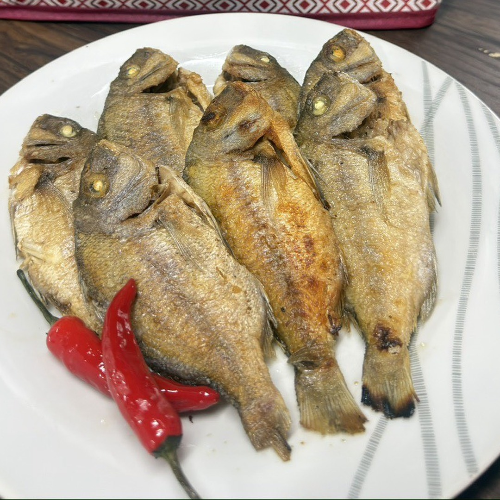
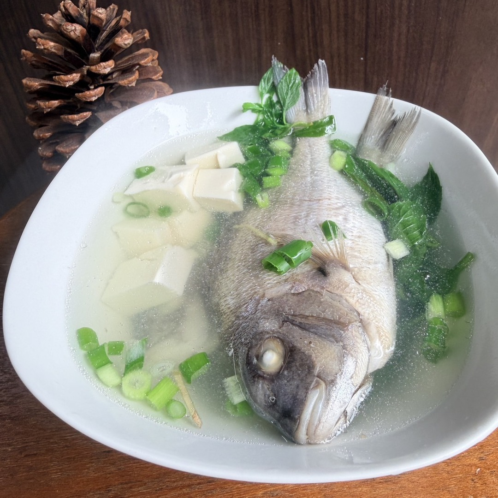

Record | 2026-06-23
本頁紀錄今天建立的魚貨 D2C 行銷資產：商品頁、社群貼文、LINE OA、團購資料包、 客服 SOP、每日自動作戰包，以及 7 組 AI agent 分工。


Launch Pack
一尾約 300g，主打家常煎、蒸、煮湯的 D2C 商品說明。
FB、IG、TikTok/Reels 的 7 天貼文與短影音腳本。
歡迎訊息、圖文選單、預購、料理、出貨與團購自動回覆。
社區、公司與親友團購可直接複製的圖文與流程。
常見問題、客訴分類、退換貨原則與高風險話術。
商品資料、價格、庫存、文案、出貨與對外動作的檢查表。
Automation
Deploy Record